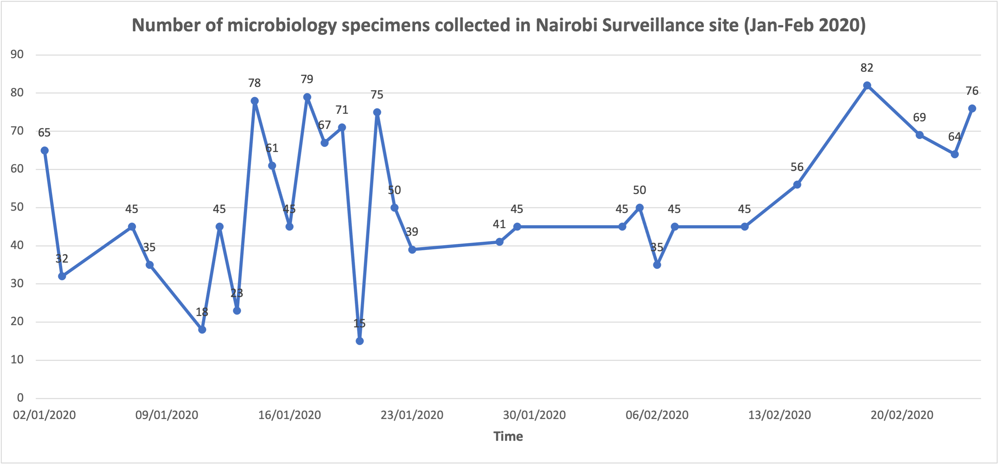

Chapter 6 Presentation of AMR data
Processed AMR data can be presented in: - Tables - Line graphs - Bar graphs - Pie charts - Histograms
AMR data can be reported in: - Stakeholder reports - Policy briefs - Conference/workshops presentations - Publications
Excel allows one to easily visualise data by using the different graphs in the Insert tab. Foe example, we have visualised the number of samples by site collection in the graph below
6.1 General tips for data visualisation
Choose the right chart with properly labelled titles, legends, X and Y axes.
Avoid 3D charts
Use color sparingly: Use a simple color scheme to highlight important aspects of your data
When selecting a color scheme, pay attention to:
- The semantic meaning of a color
- Own or organization branding rules/ organizational palette
- Color consistency
- Conservative color use
- Color balance to ensure there is a clear divergence of colors, keeping in mind that some colors are too bright for visualisation or some mix of colors are not well demarcated by people who are protanopia (color blind).
Pie charts should be avoided as it is not easy for one to clearly distinguish the proportions. If you must use them, ensure you only compare categories less than 5 and one category is clearly larger than all the rest.
6.2 Bar graphs
Bar charts/ column charts are best used when drawing comparisons between different items.
They are best when the items being compared are more than five and their data labels are long.
Only put value labels on the bars if the chars is not too crowded. Also, sort the chart in ascending order.
Source:Ministry of Health & Ministry of Agriculture Livestock & Fisheries, “National Antimicrobial Resistance Surveillance Training Curriculum: Participant Manual”, 2020
6.3 Histograms
- Histograms are best used of show the distribution of numeric data (raw data with number of values).
6.4 Line graphs
Line graphs are used to show continuous data over time (i.e the relationship between a variable of interest ver time).
Ensure your horizontal axis always depicts the time interval.
Do not plot too many lines on a line graph as it may be difficult to interpret. In addition, select an appropriate time interval that best depicts change over time.
